House Layout User Guide
House Layout is a browser-based tool for drawing interior floor plans. Import your own base plan, drag beds, sofas, wardrobes, desks and other furniture from the library, judge the space in real centimetres, and use tabs to build several designs and compare them.
- One true scale: furniture and walls are drawn in centimetres, with a scale bar, a measuring tool and 1 cm snapping.
- Architectural floor-plan style: about 80 elements, including curved walls, curved sliding doors and straight + arc composite elements.
- Compare designs: tabs like Excel worksheets, with overlay and side-by-side compare.
- Your data stays on your computer: no backend, no sign-up.
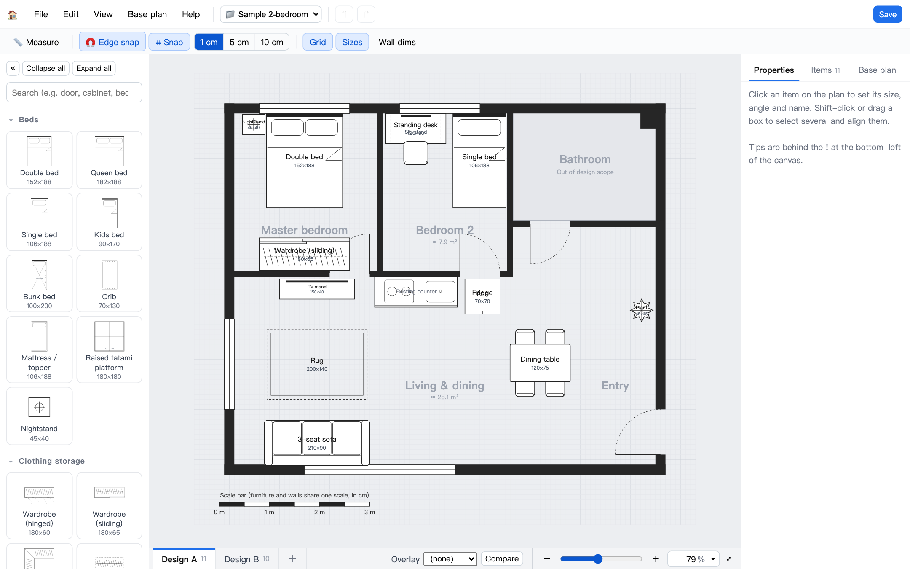
Quick start
The first time you open the site you'll see the import screen. You need a base plan (walls and dimensions) before you can start designing. There are five ways to get one:
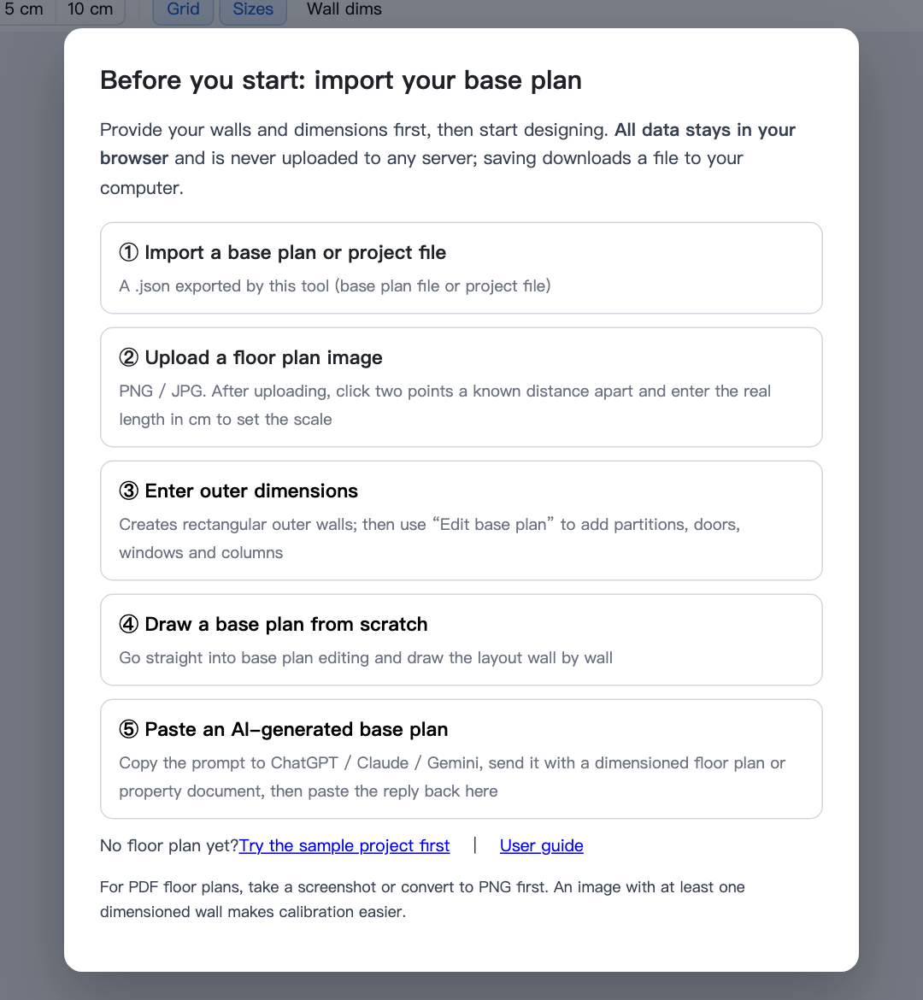
- Import a base plan or project file: a
.jsonexported by this tool. - Upload a floor-plan image: PNG/JPG. After uploading, click two endpoints with a known distance (for example a wall marked 360) and enter the real length in cm. The image is scaled to match, and you can trace the walls over it.
- Enter outer dimensions: creates a rectangular outer wall; then use "Edit base plan" to add partitions, doors and windows.
- Draw a base plan from scratch: jumps straight into base-plan editing so you can draw wall by wall with "Draw wall".
- Paste an AI-generated base plan: give your floor plan or property brochure to an AI and paste back the result (see Generating a base plan with AI).
No floor plan yet? Click "Try the sample project first" on the import screen to load the sample 2-bedroom used in this guide (with two designs). Every time you create or open something you are asked to name it, and it opens as a new project — your existing projects are never overwritten.
Interface tour
| Where | What |
|---|---|
| Menu bar (top) | File (new project, open, save, switch project, export, print), Edit (undo, cut, copy, paste…), View, Base plan, Help; on the right are the project switcher, undo/redo and save. |
| Toolbar | 📏 Measure, 🧲 Edge snap, ⌗ Snap and its precision (1 / 5 / 10 cm), grid, furniture sizes, wall dimensions. |
| Library (left) | Collapsible categories (like Visio) with search; « collapses the whole panel. |
| Right panel | Three tabs: Properties (settings for the selection, or alignment for multi-select), Objects (a list), Base plan (base-plan info and actions). |
| Tab bar (bottom) | Each tab is one design; overlay and side-by-side compare are on the right. |
| Zoom bar (bottom right) | Slider, + / −, type a percentage; ▾ offers 20%–100% and fit to screen. |
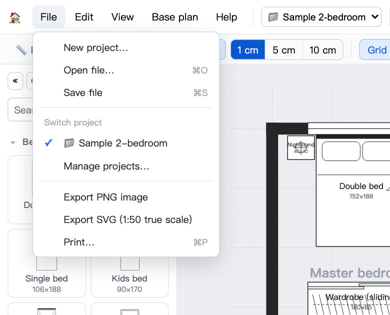
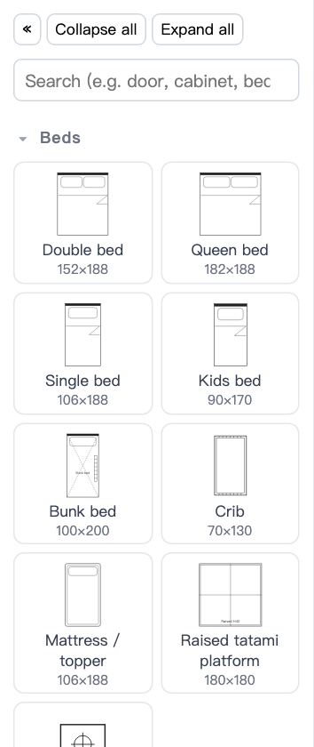
Placing furniture
- Drag an element from the left onto the plan, or click it to add it in the middle of the view.
- Drag an object to move it; drag the blue squares to resize; drag the dot on top to rotate (15° steps, hold Shift for free rotation).
- In the "Properties" tab you can type width, depth, angle, position and name; sofas have a seat count and dining tables a chair count.
- Furniture placed inside an "out of scope" area (bathroom, balcony…) gets a red outline as a warning.
- Right-click an object for copy, cut, paste, duplicate, rotate, mirror, bring forward/send back, lock and delete.
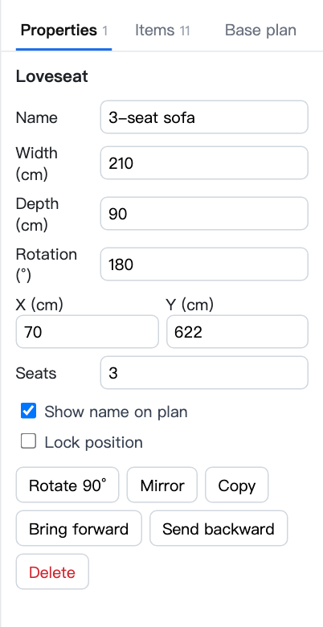
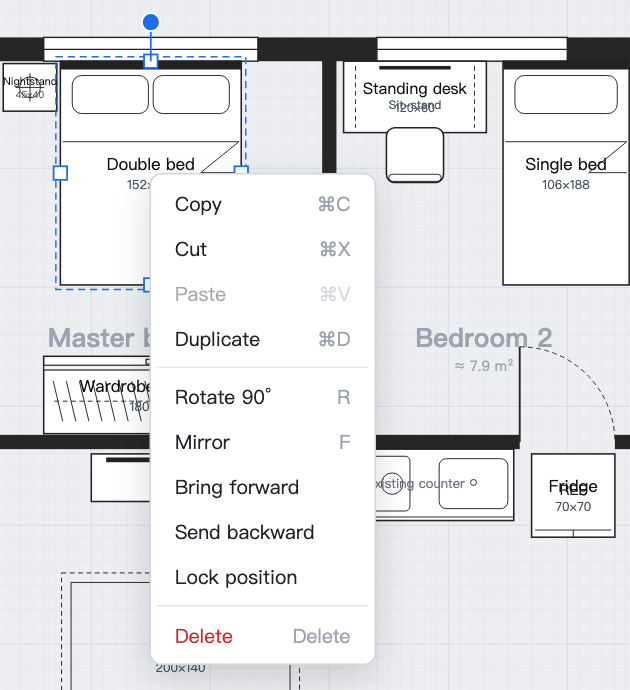
Multi-select, align & pack
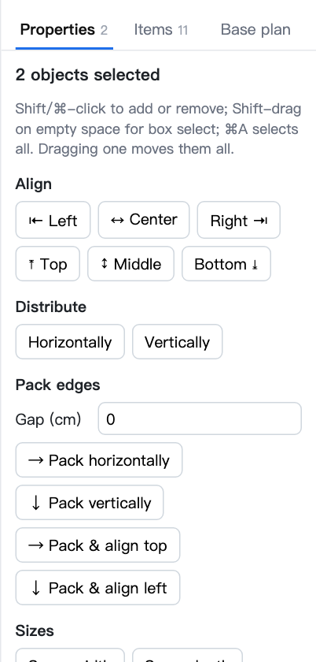
- Multi-select: Shift- or ⌘-click, Shift-drag on empty space for a selection box, ⌘A to select all. Dragging any of them moves them all.
- Align: left, center horizontally, right, top, center vertically, bottom.
- Distribute: equal spacing between 3 or more objects.
- Pack: line objects up edge to edge, with an optional gap (e.g. fridge, appliance cabinet and tall cabinet in a row).
- Same width / same depth: matches the last selected object.
- Edge snap while dragging: edges near other furniture or walls snap automatically and show an orange guide; hold Alt to suspend it, or turn off "Edge snap" in the toolbar.
Arcs & composite elements
The "Doors · Walls · Labels" category contains Straight + arc sliding door, Straight + arc wall and Straight + arc glass. Each is a single element made of "straight A → arc → straight B". In the Properties tab you set the straight lengths, arc radius, arc angle, bend direction and thickness, and the bounding box is calculated for you. Great for curved sliding doors around a corner, rounded partitions or glass.
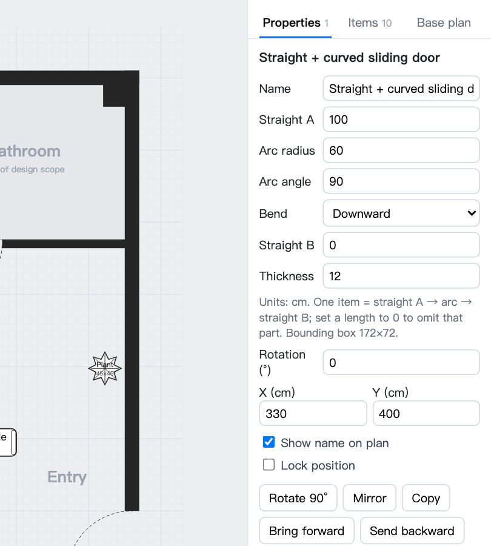
There are also pure arcs — "Curved sliding door", "Curved wall", "Corner curved vanity" and "Corner curved cabinet": width = horizontal radius, depth = vertical radius; use rotate or mirror to change the orientation.
Measuring & scale
- All elements and walls share one scale (centimetres); a 0–3 m scale bar sits at the bottom left.
- Click 📏 Measure in the toolbar or press M, then drag on the plan to see a distance; Shift locks it horizontal/vertical.
- Snap precision can be 1 / 5 / 10 cm; at 250% zoom and above a 1 cm fine grid appears.
- "Wall dims" shows the wall dimension annotations included in the base-plan file.
Design tabs & comparison
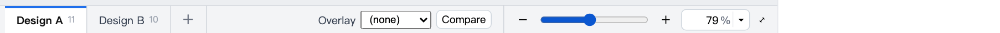
- A project (one home) can hold several designs, shown at the bottom like Excel worksheets: click to switch, double-click to rename, drag to reorder, hold ⌥ (Windows: Ctrl) while dragging to duplicate, and right-click for more.
- All designs share the same base plan; change the walls in "Edit base plan" and every design updates.
- Overlay: draws another design in translucent red on top of the current canvas so you can see the differences.
- Side-by-side compare: shows all designs next to each other with object counts and lists, and lets you switch directly.
- ⌘C / ⌘V copies furniture between designs.
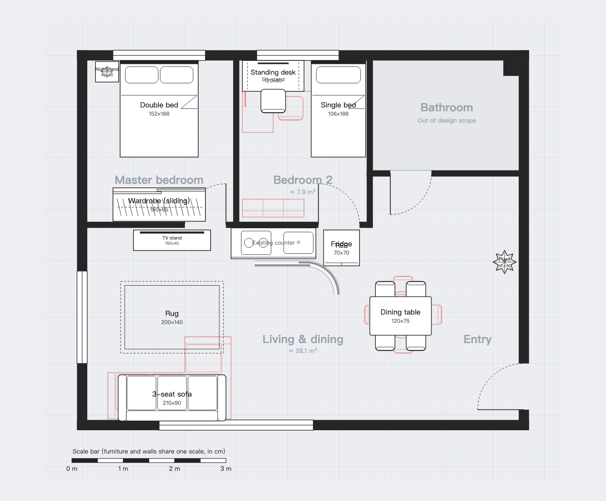
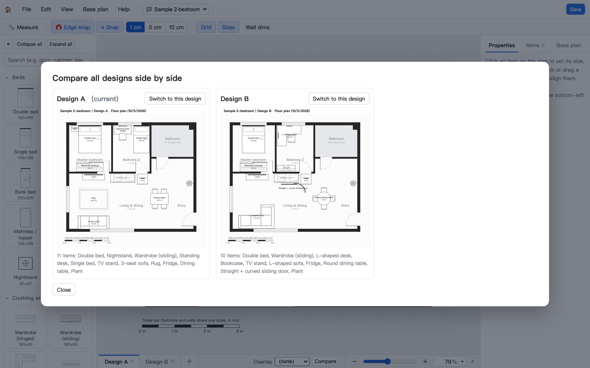
Editing the base plan
Enter from "Base plan → Edit base plan" (or the button in the right panel's "Base plan" tab). Furniture fades and locks, and the left side switches to the base-plan tools:
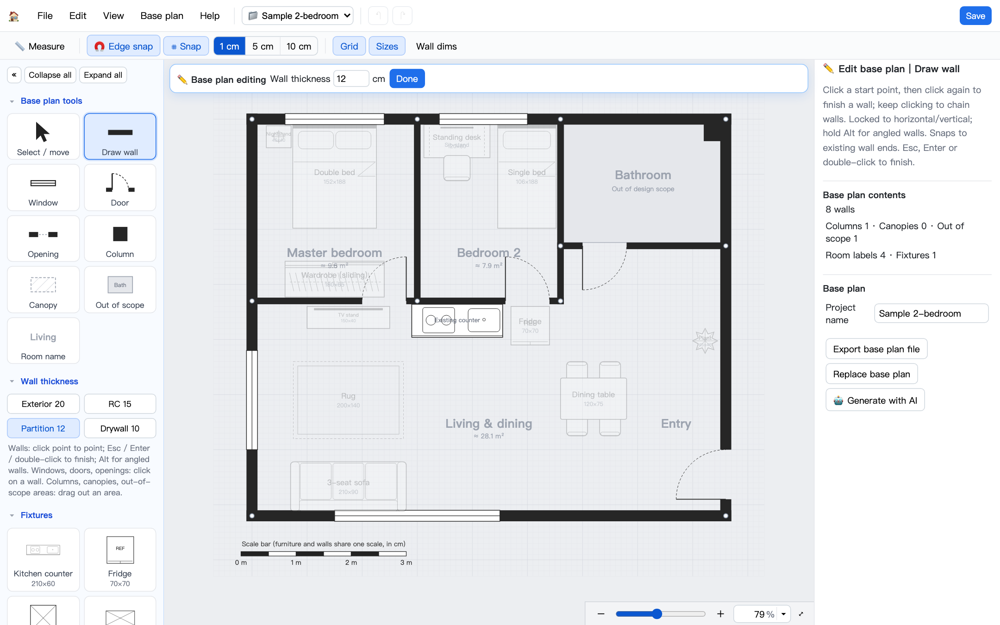
| Tool | How to use |
|---|---|
| Draw wall | Click repeatedly to draw walls, locked horizontal/vertical by default (Alt for angled walls); snaps to existing wall endpoints. Esc, Enter or double-click to finish. Quick wall thicknesses: exterior 20, RC 15, partition 12, light partition 10. |
| Window / Door / Opening | Click on a wall to add one, then adjust position and width on the right; doors also have a hinge side and swing direction. |
| Column / Canopy / Out of scope | Drag out an area. "Out of scope" areas can be named (bathroom, balcony…) and furniture placed inside gets a red warning outline. |
| Room name | Click to place; you can add a subtitle (e.g. the floor area). |
| Fixtures | Kitchen counter, fridge, tall cabinet and so on become part of the base plan; they lock when you leave editing and are shared by all designs. |
| Select | Drag to move, drag wall endpoints to change length, Delete to remove; ⌘Z undoes. |
Generating a base plan with AI
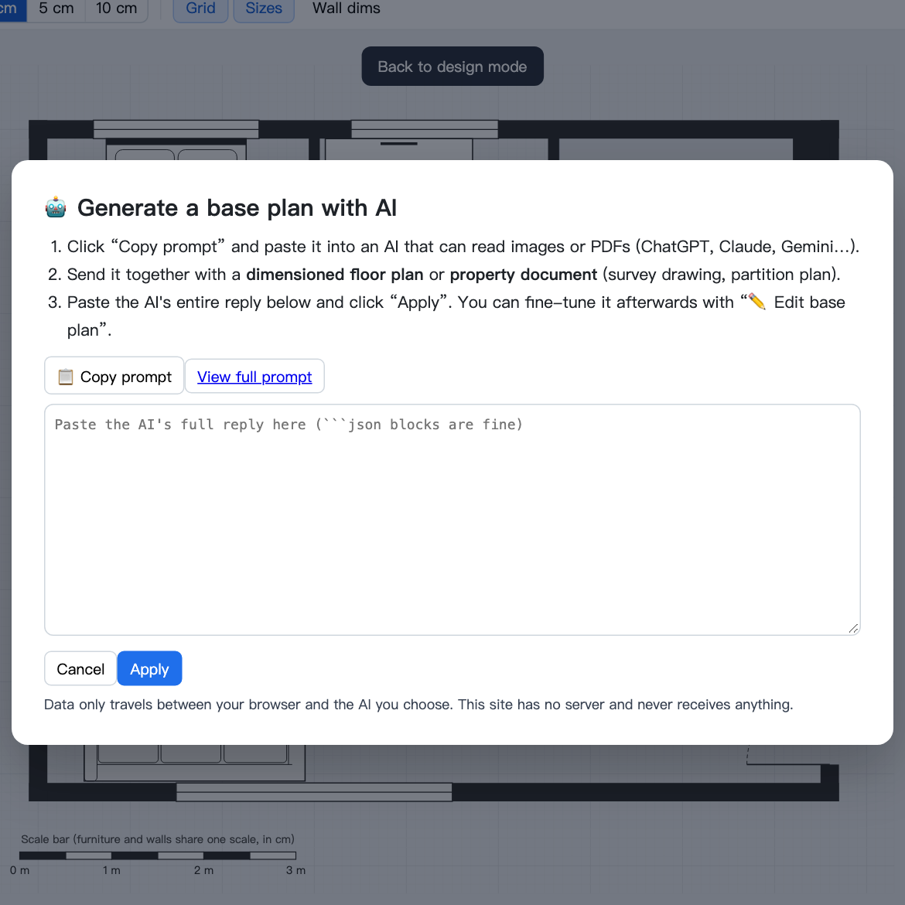
- Choose "Base plan → AI-generate base plan" or option ⑤ on the import screen, then click "Copy prompt".
- Paste it into an AI that can read images or PDFs (ChatGPT, Claude, Gemini…) and attach a dimensioned floor plan or a property brochure (survey drawing, partition plan).
- Paste the AI's whole reply back and click "Apply".
- The tool extracts the JSON and fixes small errors (e.g. walls off by up to 2 cm). Warnings are listed in the right panel's "Base plan" tab; fine-tune with "Edit base plan".
Full prompt: PROMPT.md. Survey drawings carry exact dimensions and are usually the most accurate; partition plans aren't to scale, so double-check positions by measuring.
Projects, saving & export
- One file is one whole project: "Save file" (⌘S) stores the base plan, every design tab and the overlay setting in a single
.json. "Open file" (⌘O), or dropping a file onto the window, asks for a name and opens it as a new project. - The browser keeps all projects automatically; switch between them with 📁 at the top right, and rename or delete them in "File → Manage projects". To back up or move to another computer, use "Save file".
- Export: PNG image, SVG (true 1:50 scale — print at 100%), or print.
- The base plan can be exported on its own as a base-plan file, so others can make different designs on the same plan.
Keyboard shortcuts
| ⌘Z / ⇧⌘Z | Undo / redo | ⌘S / ⌘O | Save / open |
| ⌘C ⌘X ⌘V | Copy, cut, paste | ⌘D | Duplicate |
| ⌘A | Select all | Delete | Delete |
| R / ⇧R | Rotate 90° (reverse) | F | Mirror horizontally |
| Arrow keys (Shift ×10) | Nudge position | M | Measure |
| Shift / ⌘ click | Add to / remove from selection | Shift-drag on empty space | Selection box |
| Alt while dragging | Suspend edge snap | Esc | Deselect / close menu |
| While editing the base plan: V select, W draw wall, Esc / Enter finish the wall. On Windows, use Ctrl instead of ⌘. | |||
Privacy
House Layout is a single static web page with no backend and no trackers. Your base plans and designs live only in your browser (localStorage) and in files you download; nothing is uploaded to any server. When you generate a base plan with AI, the data only travels between you and the AI service you choose.
Developer
Josh Tsai (@u9951064) · Source code and issues: github.com/u9951064/house-layout · MIT License